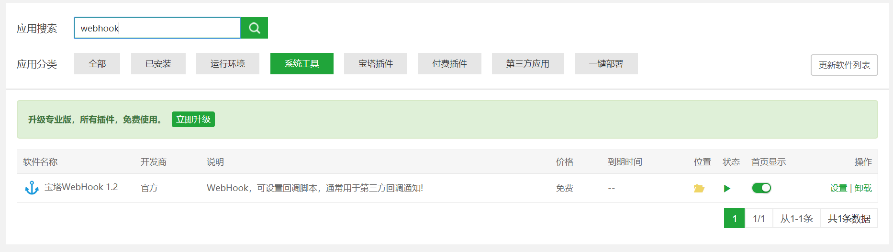
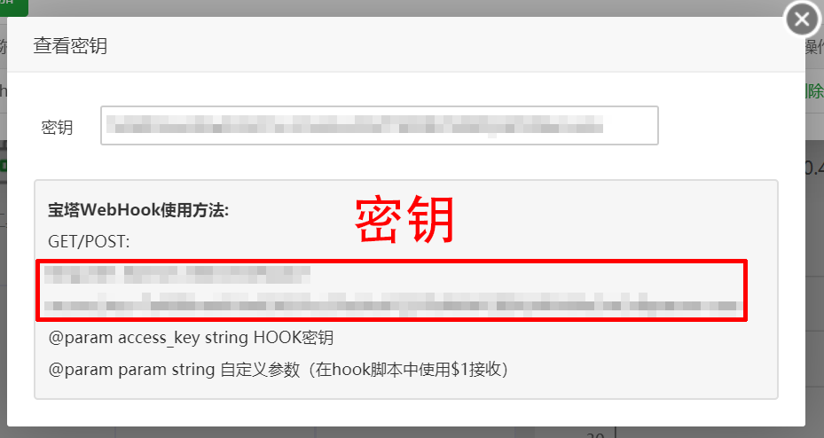
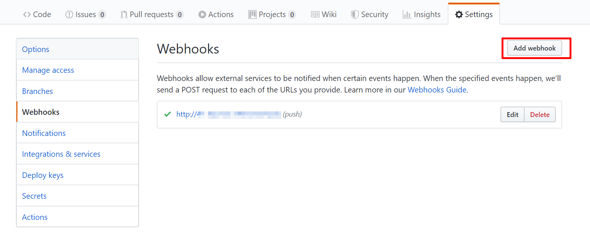
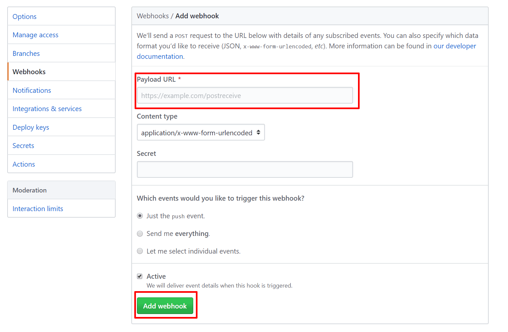

宝塔面板WebHook设置
最后更新：2020年1月30日16:13
通过webhook可以实现往github进行push操作时，在设置了webhook的服务器上就能自动拉取最新的代码，省去了再次部署的麻烦。webhook的原理大同小异，不仅仅局限于宝塔面板。
宝塔面板添加webhook
-
宝塔面板设置webhook
在宝塔面板的软件商店中搜索webhook，下载安装
 -
重点：配置webhook的shell脚本
在面板首页的webhook中添加hook

名称可以随便填，执行脚本栏内填入下方代码,强调下这是Linux系统shell脚本，不懂的语法可以去Google
#!/bin/bash echo "" #输出当前时间 date --date='0 days ago' "+%Y-%m-%d %H:%M:%S" echo "Start" #git项目路径 gitPath="/www/wwwroot/SoraPage" #git 网址 gitHttp="https://github.com/Sora-Sou/SoraPage.git" #判断项目路径是否存在 if [ -d "$gitPath" ]; then cd $gitPath echo "拉取最新的项目文件" sudo git fetch --all && git reset --hard origin/master && git pull echo "设置目录权限" sudo chown -R www:www $gitPath echo "End" date --date='0 days ago' "+%Y-%m-%d %H:%M:%S" exit fi上述脚本需要自定义的地方
- 第8行：gitPath换成你网站的根目录（或者代码存放文件夹）
- 第10行：gitHTTP换成你github仓库的HTTPS克隆链接（默认的克隆链接是SSH，注意切换）
- 第15行：git的命令可以自己写，这里给出的命令是从github拉取并强制覆盖（会丢失你在服务器上作出的更改）
-
获取webhook密钥
密钥是从“http”一直到“param=aaa”这一段的，复制。

GitHub添加webhook
-
在repo的设定里找到WebHooks，点Add webhook
 -
把复制的密钥填入Payload URL中，Add webhook！
 - 可以push试一试，应该是没问题了。